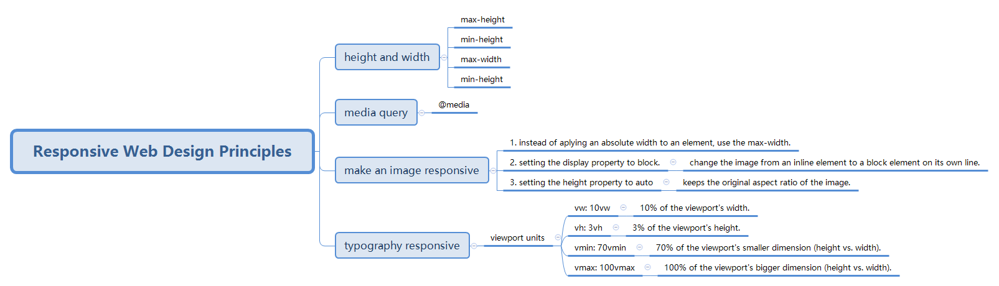

FreeCodeCamp Study Notes
WebDesign
›
Responsive Web Design Principles
Basic HTML and HTML5
Basic HTML and HTML5 知识点
Basic CSS
Basic CSS 知识点
Applied Visual Design
Applied Visual Design 知识点
Applied Accessibility
Applied Accessibility 知识点
Image alt attribute
Headings
Semantic Elements
Visual Sense
Attributes Relative to the Keyboard
Responsive Web Design Principles
Responsive Web Design Principles 知识点
CSS Flexbox
css flexbox 知识点
Flex Container
Flex Item
CSS Gird
CSS Grid 知识点
Grid Container
Grid Item
Grid Areas
build-in function
Layout
Responsive Web Design Principles 知识点

←
Previous
Next
→